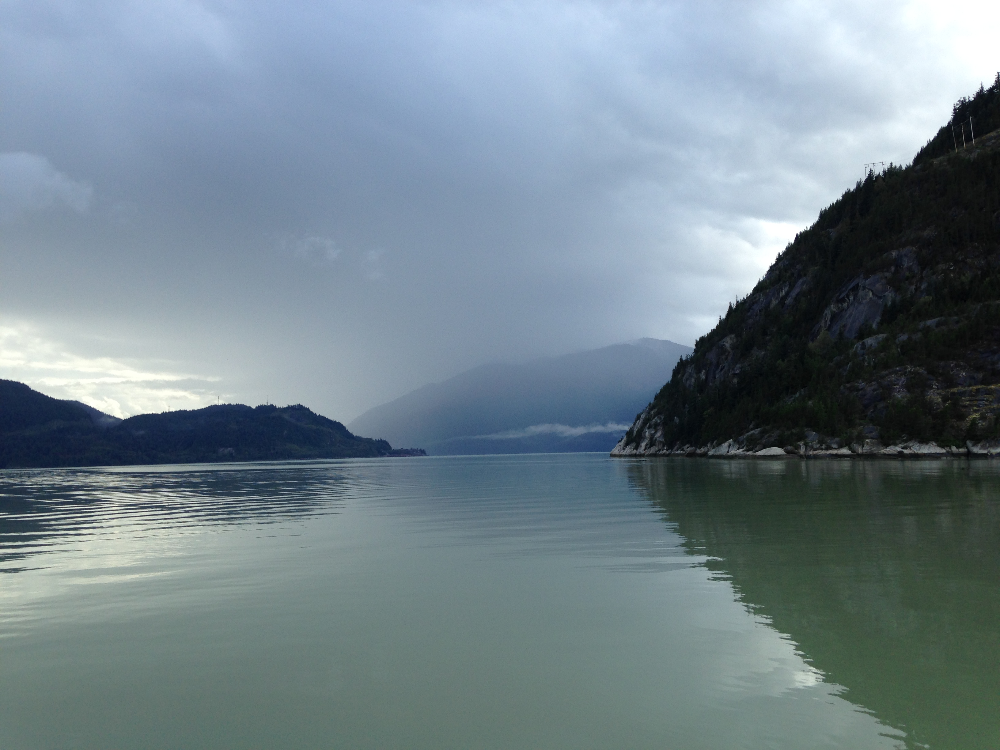
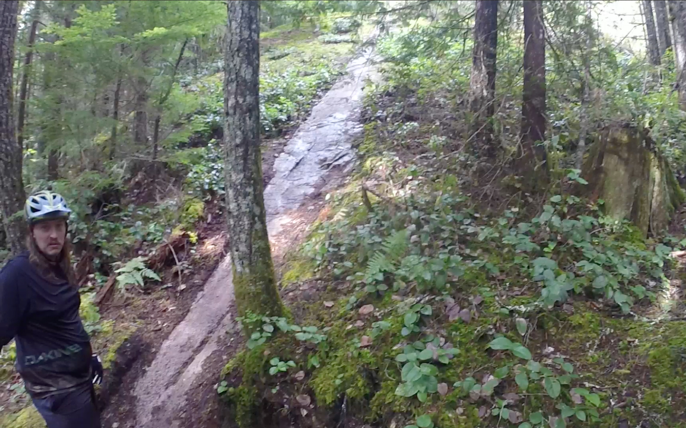

It has been raining off and on for the past 4 days... We spent those rainy days checking out the scenery on foot and running errands (washing muddy bike clothes).

While we were exploring the Squamish spit and estuary the rain ceased for a few minutes.
The spit is where the Howe Sound meets the Squamish River. This spot gets really consistent winds and is the launch area for local kiteboarders and windsurfers.
The wind was calm while we were at the spit so there were no kites out but the views of Stawamus Cheif and Shannon Falls were incredible.
A closer look at the granite walls of the Chief. Squamish is a very popular destination for rock climbers.
The rain held off over night. It was time to ride the renowned Alice Lake trails.
The view from a much needed break spot at the top of Boney Elbows. On day 20 we rode Rupert, Entrails, and Boney Elbows. We ended up hiking a lot of Entrails and Boney Elbows.
The rock slabs at Alice lakes were big and long, steep, holey, off-camber, and multi-pitched.
One rock slab led into another, and at some points there were even 3 or more hard rock slabs in a row, with challenging rock and root moves in between each slab.

The Alice Lake trails motivated us to improve our steep rock riding skills.
Squamish Flow Trails
The folks at Corsa Cycles were happy to offer us local ride recommendations. They directed us towards the Diamond Head area of Squamish to ride Half Nelson, Pseudo Tsuga, Fred, Tinder, and Your Mom. These are the new school flow trails of Squamish and are the exact opposite of the Alice Lake trails. Check out the video below to see for yourself.